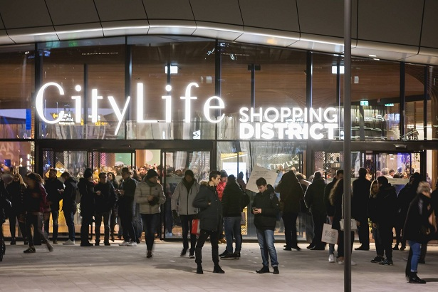
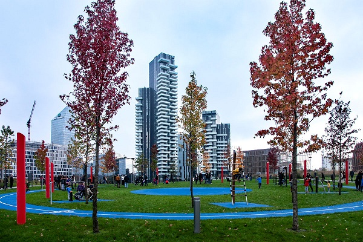

4 LUOGHI PER LA SOCIALIZZAZIONE
CITYLIFE, I NAVIGLI, PIAZZA GARIBALDI E CA' GRANDA sono i quattro posti che ti consigliamo per conoscere nuove persone e per rilassarti facendo delle passegnate, dello shopping o un giro in bicicletta
CITYLIFE
Il complesso sorge nell'area ex-Fiera, liberata in seguito allo spostamento delle attività fieristiche nel nuovo polo di Rho-Pero. Il quartiere è servito dalla stazione della MM5 Tre Torri. Nell’area dove oggi sorge CityLife in passato si trovava la vecchia Fiera di Milano.
CityLife Shopping District è il più grande distretto urbano dedicato allo shopping in Italia, un luogo speciale dove fare i tuoi acquisti. Inoltre ci sono tanti ristoranti diversi dove fermarsi a consumare un buon pasto dopo aver fatto shopping (clicca qui per vederne alcuni).
CityLife Shopping District è inserito in un quartiere interamente pedonale, con viabilità e parcheggi interrati.
E’ un luogo molto frequentato dai giovani e in questa zona abitano diverse celebrità che potresti incontrare.
Inoltre c’è anche un parco molto grande dove fare delle lunghe passeggiate per rilassarsi.
Se vuoi avere più informazioni visita il sito ufficiale.
NAVIGLI
I Navigli sono una delle zone più suggestive e romantiche per chi vuole visitare Milano e vivere delle esperienze autentiche.
I Navigli milanesi sono un sistema di canali artificiali e navigabili, che hanno lo scopo di fornire l’acqua al centro della città e per il trasporto delle merci.
Inoltre, In città, c’è una porzione del Naviglio della Martesana, un breve tratto del Naviglio di San Marco oltre ad alcune conche e chiuse storiche.
Clicca qui per saperne di più

I navigli sono anche un'ottima destinazione per fare una passeggiata a piedi o con la bici, ad esempio seguendo i navigli della martesana.
Percorrere il tratto della Martesana in bici è facile e non troppo dispendioso a livello di energie.
Non devi prepararti dunque settimane prima con duri allenamenti.
Tutto il tragitto si svolge sul piano, è alla portata di tutti ed è adatta per qualsiasi tipo di bici.
Oltretutto si tratta di un tragitto ben riparato, vietato al traffico di motori e con con transenne di protezione sul lato del naviglio.
Dopo una passeggiata intorno ai navigli ti consigliamo un ristorante dove fermarti a mangiare, si chiama: Bottega Della Pizza e si trova in Via Angelo Cazzaniga, 11.
Se vuoi vedere altri percorsi attorno ai navigli clicca qui.
PIAZZA GARIBALDI
Sin dall’antichità Piazza Garibaldi ha svolto diverse funzioni: politica, commerciale, culturale, religiosa o anche di semplice luogo d’incontro tra le persone.
Oggi è uno spazio di incontro, che la pandemia per mesi ha bloccato, ma che rimane alla base della nostra vita.
Qui sorgono diversi locali dove i giovani amano radunarsi soprattutto nei weekend.
Ci sono anche tanti posti di un certo livello che vengono frequentati da numerosi vip.
Motivo per cui, anche coloro che si trovano a Milano per turismo, non possono fare a meno di visitare.
Inoltre a Garibaldi c’è un parco nel quale c’è un'area riservata a una piccola palestra all’aperto e in Piazza Gae Aulenti ci sono alcuni negozi e bar dove ci si può fermare dopo una passeggiata al parco.
Per saperne di più clicca qui.
CA' GRANDA
L’Università degli Studi di Milano, conosciuta come “Unimi” o “La Statale” è una delle più prestigiose d’Italia, ma anche un luogo che racchiude in sé molta parte della storia artistica del capoluogo lombardo.
Fondata nel 1923, è la più grande della Lombardia e racchiude diverse curiosità.
Qui si riuniscono gli studenti, perciò è un ottimo luogo dove conoscere nuove persone.
Molti studenti per pranzo si incontrano alla mensa che si trova a pochi passi dall’università, è situata in Via della Signora, 3.
Questo luogo ti propone buon cibo e un posto dove riposare.
Vi vanno studenti provenienti da corsi differenti.
I corsi offerti dall'università sono: Giurisprudenza, Mediazione linguistica e culturale, Medicina e Chirurgia, Medicina Veterinaria, Scienze agrarie e alimentari, Scienze del Farmaco, Scienze e Tecnologie, Scienze Motorie, Scienze politiche economiche e sociali, Studi umanistici.
Oltre alla mensa ci sono diversi luoghi, molto vicini all’università, dove studiare e passare il tempo in compagnia, ad esempio:
- il Bar Campus situato in Via Festa del Perdono, 12;
- il Bar C'era Una Volta che si trova in Via Festa del Perdono, 14.
Se cerchi un luogo più silenzioso ti consigliamo: la biblioteca in Via Laghetto, 9/11, al suo interno si trova anche un bar dove puoi consumare qualcosa da mangiare.
Se cerchi un posto all'aria aperta in Largo Francesco Richini si trova un parco altrettanto vicino all’università.
Se sei interessato a saperne di più clicca qui.

Speriamo che questi luoghi possano essere di tuo gradimento!